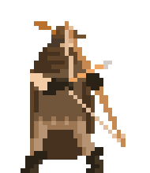
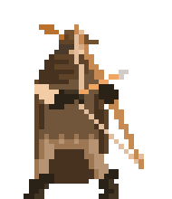

Welcome to Alterborne
 

In the heart the great land of Geru'xelm, the seat of power is in danger.
There was a foe of a thousand demons, who paved the way for your damnation.
189 soldiers, in the service of the king. Protecting the kingdom.
Gave their lives for glory. Only 4 survived.
This is your party.